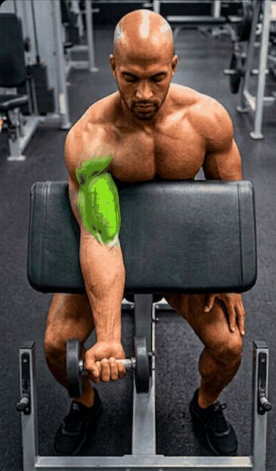
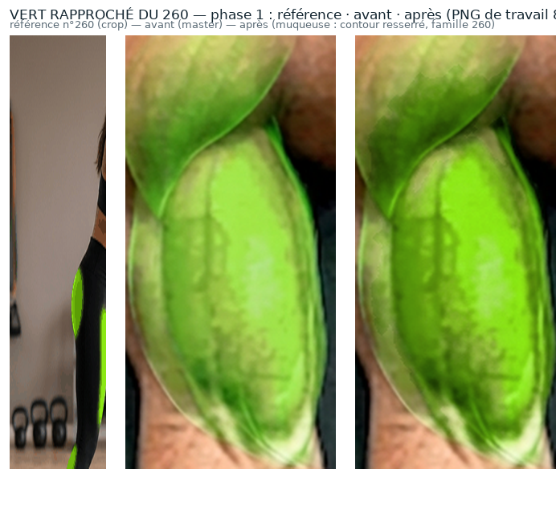
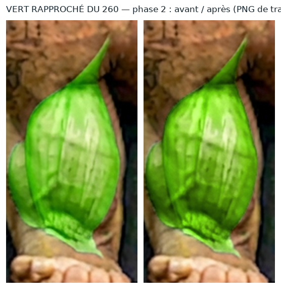

Livré aujourd'hui — GIF 259×440

198 ko
Prototype — WebP 388×660 q90

98 ko
Réglages retenus : WebP animé, 660 px de haut, vert rapproché du n°260. Aucun GIF livré n'a été remplacé, l'application n'est pas modifiée.
Même taille que .movement-visual dans JARVIS : à gauche ce qui est livré
aujourd'hui, à droite le prototype.
Défiler horizontalement. C'est ici que se juge la netteté du muscle et du visage.
Mêmes images de travail : seule la façon de les enregistrer change. Le GIF est limité à 256 couleurs, ce qui se voit dans le muscle (moucheté).

Le vert est retouché avant l'export, dans l'image de travail : contour resserré et famille de couleurs du n°260, sans aplatir la texture.


test en cours…
| Réglage | Poids | Erreur hors vert | Erreur dans le vert | PSNR |
|---|---|---|---|---|
| Livré : GIF 259×440 | 198 ko | 10,7 | 24,0 | 21,7 dB |
| Prototype : WebP q92 | 115 ko | 1,6 | 1,7 | 42,2 dB |
| Prototype : WebP q90 | 98 ko | 1,9 | 1,9 | 41,3 dB |
| Prototype : WebP q85 | 73 ko | 2,2 | 2,3 | 39,5 dB |
| WebP sans perte (référence de contrôle) | 612 ko | 0 | 0 | sans perte |
| GIF de repli 660 (si le WebP ne passe pas) | 403 ko | 2,8 | 2,1 | 37,5 dB |
1. Le WebP s'anime-t-il sur le téléphone ?
2. Qualité d'image : q92 (115 ko), q90 (98 ko) ou q85 (73 ko) ?
3. Le vert vous convient-il tel quel (contour resserré, famille 260) ?